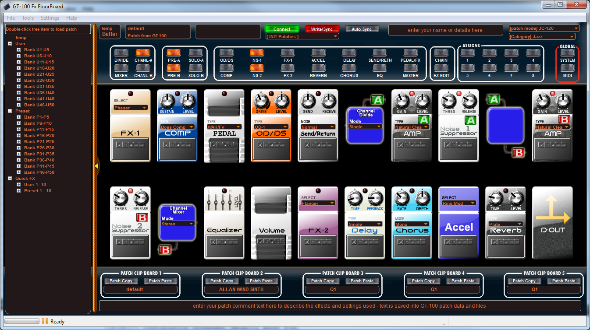

IndexInstallation,
Connections and Software Configuration - Getting Started
Download
KATANA FloorBoard Editor
To
download the latest version and to learn more about the KATANA
FloorBoard, visit:sourceforge.net/projects/fxfloorboard/
Installation
You
should first visit the Roland website and install their KATANA MIDI
drivers for
your platform if you plan to use USB for the MIDI
interface, or confirm or
install your MIDI interface driver from its manufacturer if not using
USB.
Double-click
the installation file, for Windows it will look something like this: KATANAFloorBoard_Setup.exe
The
installation will begin and may ask for permissions and
location option.
Once
the installation is complete, start the KATANA FloorBoard Editor. You
should see the main panel, as follows:

Editor
Configuration
With
the editor running, select the menu Settings
> Preferences, which
will open the KATANA FloorBoard - Preferences, as follows:
Settings
> Preferences > General
Here
your can click the Browse
button to set which folder to store your patches. A navigation panel
opens to browse to the location you would like to save your patch files
to. Click Ok to confirm your selection.
Settings
> Preferences > MIDI
Here
you configure the MIDI interface that is connected to the KATANA, either
USB or traditional MIDI. In the Midi settings area,
select both the Midi
in and Midi
out devices that are connected to your KATANA, and then
click the Ok
button when finished. I used an Edirol UM-2, as seen here, but
yours will probably be different. If your MIDI interface has multiple
ports, like mine (note the 2's), then be sure to select the ports
connected to your KATANA.
IMPORTANT: If you do
not see your MIDI interface in the list of available interfaces, it may
be assigned to other software, such as the Roland Librarian,
or your
recording software perhaps. You must disconnect the MIDI interface from
the other software before you can connect it to the GR-FloorBoard in
the MIDI panel or it will not be visible here. I also assume you have
already installed drivers for your MIDI interface or for the KATANA
itself.
NOTE for Linux Users: If you are
on a Linux system, only standard MIDI is supported. Roland does not
provided a KATANA USB driver for Linux.
MIDI
Problems?
If
you have MIDI connection problems, try swapping the USB or MIDI cables
with fresh ones and if using MIDI cables, you need a pair, one cable
each
way. Connect one MIDI cable from MIDI-OUT on the KATANA to
MIDI-IN on the MIDI interface and the other MIDI cable from
MIDI-OUT on the MIDI interface to MIDI-IN on the KATANA. It's easy to
swap connections with MIDI cables, and since they both look the same -
it happens a lot. USB is a bit simpler.
Settings
> Preferences > Window
This
panel lets you configure the KATANA FloorBoard main window options. It
is self explanatory. The Restore
side panel checkbox
refers to the patch(list) tree panel, which can be hidden by unchecking
the checkbox. If Single
Window Layout is enabled, some advanced features cannot be
displayed.
Settings
> Preferences > Language
This
panel lets you change the user interface language to one of the
available languages.
Settings
> Preferences > Look/Style
This
panel allows you to pick a window style and a color scheme.
Connect
On
the main KATANA FloorBoard Editor panel, if you have your MIDI
connection configured successfully, you can now click the Connect
button at the top-middle of the panel.
It will turn bright green for ON, once connected. You are now ready to
begin editing patches. After your editing session, you can click the Connect button
again to disconnect the KATANA from the computer, which will turn OFF
the green Connect light.